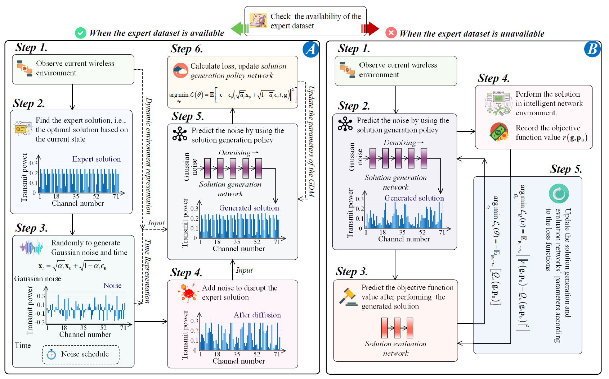

The structure of our tutorial.

GDM training approaches with and without an expert dataset.
We initiate our discussion with the foundational knowledge of GDM and the motivation behind their applications in network optimization. This is followed by exploring GDM’s wide applications and fundamental principles and a comprehensive tutorial outlining the steps for using GDM in network optimization. In the context of intelligent networks, we study the impact of GDM on algorithms, e.g., Deep Reinforcement Learning (DRL), and its implications for key scenarios, e.g., incentive mechanism design, Semantic Communications(SemCom), Internet of Vehicles (IoV) networks, channel estimation, error correction coding, and channel denoising. We conclude our tutorial by discussing potential future research directions and summarizing the key contributions.
In this part, we representatively formulate an optimization problem in a wireless network and show a step-bystep tutorial to solve it by using GDMs.
Consider a wireless communication network where a base station with total power $P_T$ serves a set of users over multiple orthogonal channels. The objective is to maximize the sum rate of all channels by optimally allocating power among the channels. Let $g_n$ denote the channel gain for the $n$ th channel and $p_n$ denote the power allocated to that channel. The sum rate of all $M$ orthogonal channels is given by the sum of their individual rates. Let the noise level be set as $1$ without loss of generality for the analysis. The optimization goal is to find the power allocation scheme $\{p_1, ..., p_M\}$ that maximizes the sum rate $C$ under the power budget and the non-negativity constraints as:

The dynamic nature of the wireless environment presents a significant challenge, as the values of the channel gains, denoted as $\{g_1, ..., g_M\}$, can fluctuate within a range. Therefore, our objective is, given a set of environmental variables as a condition, to use GDM to denoise the Gaussian noise into the corresponding optimal power allocation scheme under this condition.
Here, we consider $M= 100$. Specifically, the first 50 channels are in good quality and the last channels are in deep fadings.
def state(self):
# Provide the current state to the agent
states1 = np.random.uniform(13, 14, 50)
states2 = np.random.uniform(0, 0.1, 50)
states = np.concatenate([states1, states2])
self._laststate = states
return states
1) Create a new conda environment with the following command:
conda create --name gdmopt python==3.82) Activate the created environment with the following command:
conda activate gdmopt3) Install the following packets using pip:
pip install tianshou==0.4.11
pip install matplotlib==3.7.3
pip install scipy==1.10.1
4) Run main.py in the file Main to start the program.
A. For the case that an expert database is accessible, in main.py, please set
parser.add_argument('--expert-coef', default=True)actions = torch.abs(actions)parser.add_argument('--expert-coef', default=False)actions = torch.sigmod(actions)
A. Note that the power allocation problem we consider here is a highly simplified one. In such cases, the performance of GDM is not always superior to DRL. For more realistic optimization problems (such as decision problems involving state transitions), considering combining GDM with DRL could be worthwhile, as is explored in our D2SAC code and paper Generative AI-aided Optimization for AI-Generated Content (AIGC) Services in Edge Networks
B. The relationship between GDMs and DRL in intelligent network optimization is not just the substitution or competition but rather a compliment and/or supplement of each other that allows for mutual enhancement and learning. In situations where expert strategies are not available for guidance, GDM can leverage a solution evaluation network during the training phase. This is like the Q-network commonly used in DRL. The solution evaluation network estimates the quality of a given solution, e.g., the power allocation scheme in the discussed example, under specific environmental conditions. This quality assessment guides the GDM during its iterative denoising process. Moreover, other advanced techniques from the DRL field can be adopted to make GDM training even more efficient. For example, the double Q-learning technique, which aims at reducing over-estimation in Q-learning, can be adopted. This approach maintains two Q-networks, using the smaller Q-value for updates, thus offering a conservative estimate and mitigating over-optimistic solution assessments. Incorporating such methods can augment GDM training, promoting robustness and efficiency.

@article{du2023beyond,
title={Beyond deep reinforcement learning: A tutorial on generative diffusion models in network optimization},
author={Du, Hongyang and Zhang, Ruichen and Liu, Yinqiu and Wang, Jiacheng and Lin, Yijing and Li, Zonghang and Niyato, Dusit and Kang, Jiawen and Xiong, Zehui and Cui, Shuguang and Ai, Bo and Zhou, Haibo and Kim, Dong In},
journal={arXiv preprint arXiv:2308.05384},
year={2023}
}